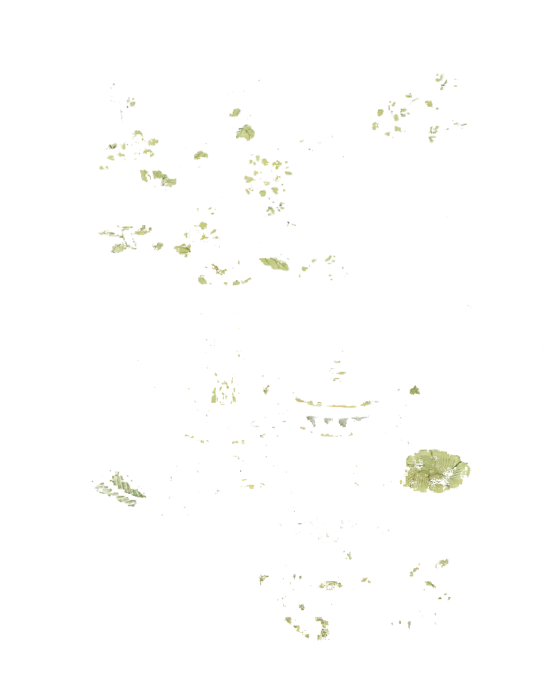
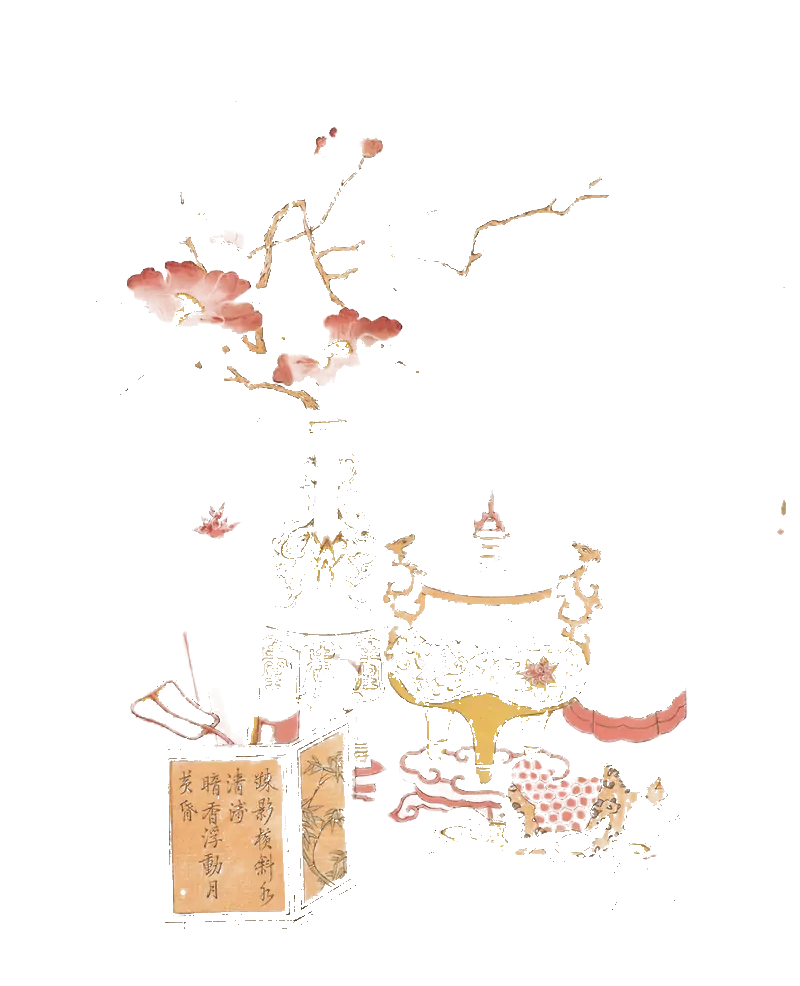
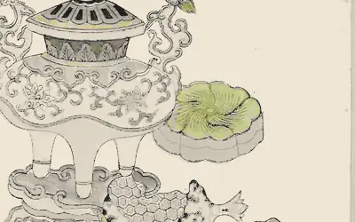

一先刻墨版。
所有轮廓都在这一块上。之后的每一版颜色，都要对准它。
四种特效，各对应印坊里一个真实的动作。都能暂停；系统开启减少动态效果时，画面直接停在完成后的样子。
网点取自《红椿》版画的明暗。指针靠近就放大；触摸与键盘不依赖它。
入刀慢、行刀快、收刀再慢。刻掉的叶脉，印出来是留白；右边的试印和版左右相反，就是下面墨版的做法。
一滴靛墨落在楮皮纸上，十二秒洇开一次，干边略深。
正在准备 WebGL…
靛与红两版水印慢慢互相渗开。文字始终放在晕染之外的纸面上。


《铜瓶梅椿》，江南彩色版画，约 1700–1750 · 克利夫兰艺术博物馆 · CC0
所有轮廓都在这一块上。之后的每一版颜色，都要对准它。
叶子和果盘的绿先印。滚筒每过一次，只多一种颜色。

花瓣、瓶耳和屏风的暖色压在最上面，最先被看见。
红版在墨版上来回漂移。看准两版重合时按“压印”，或聚焦后按 Enter / 空格。一共印五张。
0 / 5，准备好就出发。